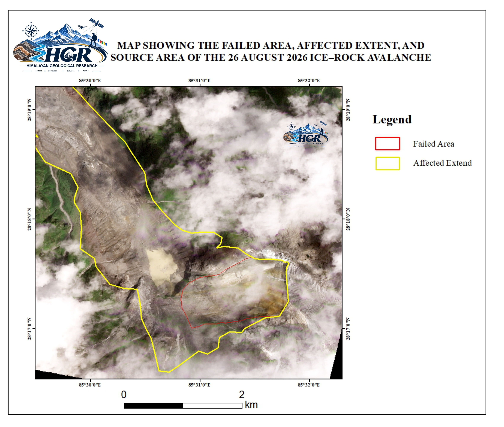
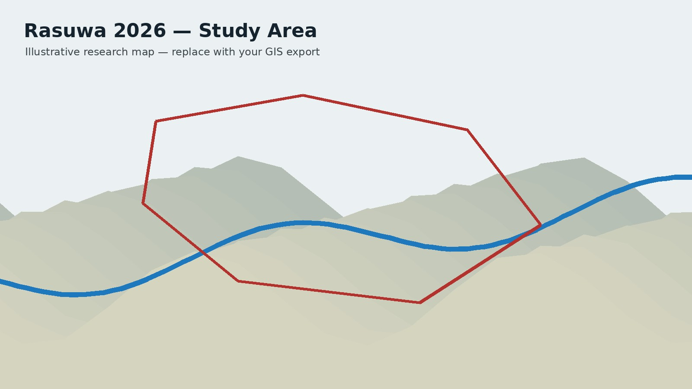
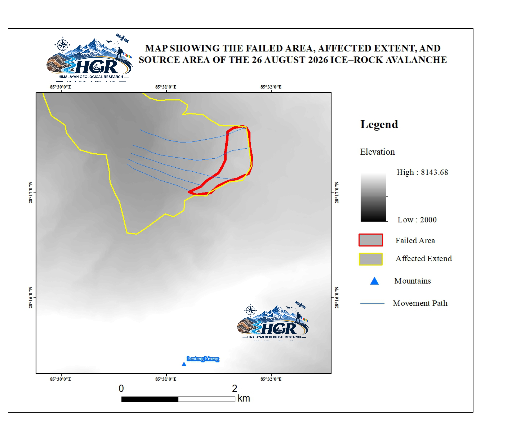
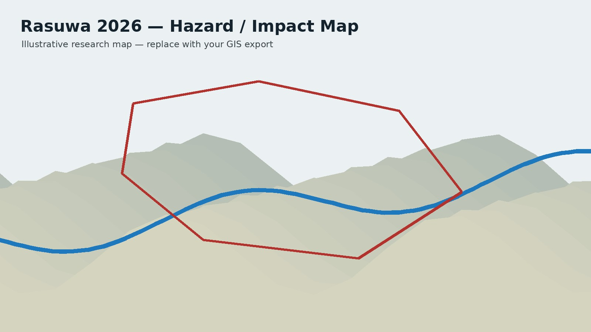

2026 Rasuwa Ice–Rock Avalanche: Reconstruction of a Transboundary Ice–Rock Avalanche and Debris-Flow Cascade in the Central Himalaya

1. Event Overview
On 26 August 2026, at approximately 8:37 a.m., a major ice–rock avalanche occurred in the high Himalayan terrain of the Nepal–China transboundary region near the Langtang Lirung and Tsangbu Ri mountains in Rasuwa, Nepal. The event involved the catastrophic collapse of a large rock mass together with the overlying ice/glacier, generating a massive downslope movement. Following the initial failure, the displaced material entered the Lhende Khola, Bhote Koshi River, and Trishuli River, where it transformed into a highly channelized debris flow and flood. The flow propagated downstream along the Trishuli River corridor toward the Rasuwagadhi–Kerung area, resulting in extensive geomorphic changes, river-channel disturbance, sediment deposition, and impacts on infrastructure and transportation. The event represents a significant high-mountain cascading hazard in which an ice–rock avalanche evolved into a large downstream debris-flow and flood event with transboundary consequences.
2. Study Area

3. Flow-Path Reconstruction

4. Hazard / Impact Mapping

5. Data & Supporting Materials
The data/ folder is reserved for event-specific datasets and derived products. Large datasets can later be linked to cloud storage or repository releases rather than placed directly in the website.
6. Research Outputs
Add the final publication, conference presentation, report, DOI and downloadable figures here as the work develops.